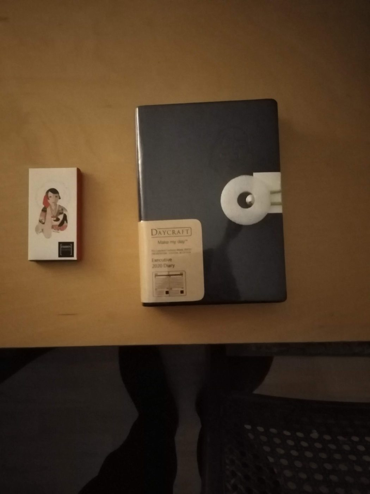
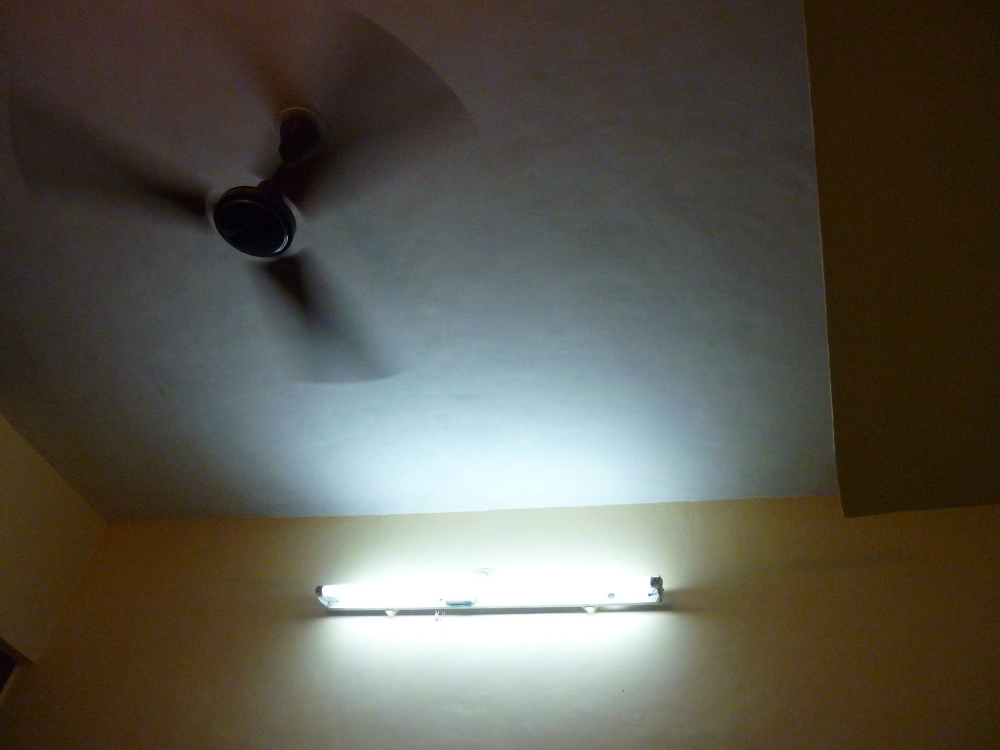

The Influenced By Series · Ten writers who shaped the form
Each essay in this series takes one writer who has influenced the voice and practice behind Tumbleweed Words — and examines what exactly they taught about the compressed sentence, the withheld detail, and the story that ends before it ends.
Raymond Carver
Dirty realism, the working class sentence, omission as form.
Read →
Ernest Hemingway
The iceberg theory, the declarative sentence, what's left unsaid.
Read →
Amy Hempel
The master of the compressed form. Grief held at arm's length.
Read →

Anton Chekhov
The indirect method, subtext, the scene that changes nothing and everything.
Read →

Virginia Woolf
Interiority, the moment of consciousness, prose as perception.
Read →
Jorge Luis Borges
The labyrinth, the infinite, the short story as metaphysical argument.
Read →
Franz Kafka
Bureaucratic dread, the parable, the sentence that turns on itself.
Read →

Samuel Beckett
Failure as form, the fragment, language at the edge of meaning.
Read →
Grace Paley
The political and the intimate, voice as character, the short short.
Read →
W. G. Sebald
Memory, displacement, the essay-novel, the photograph as rupture.
Read →